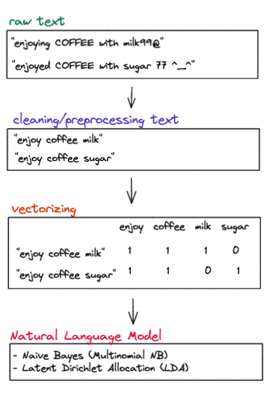
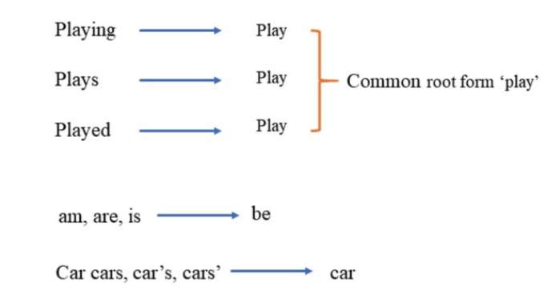
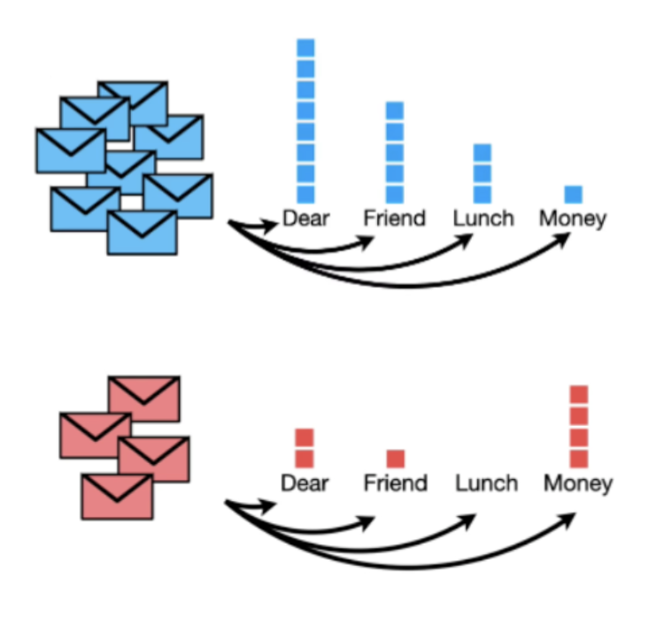
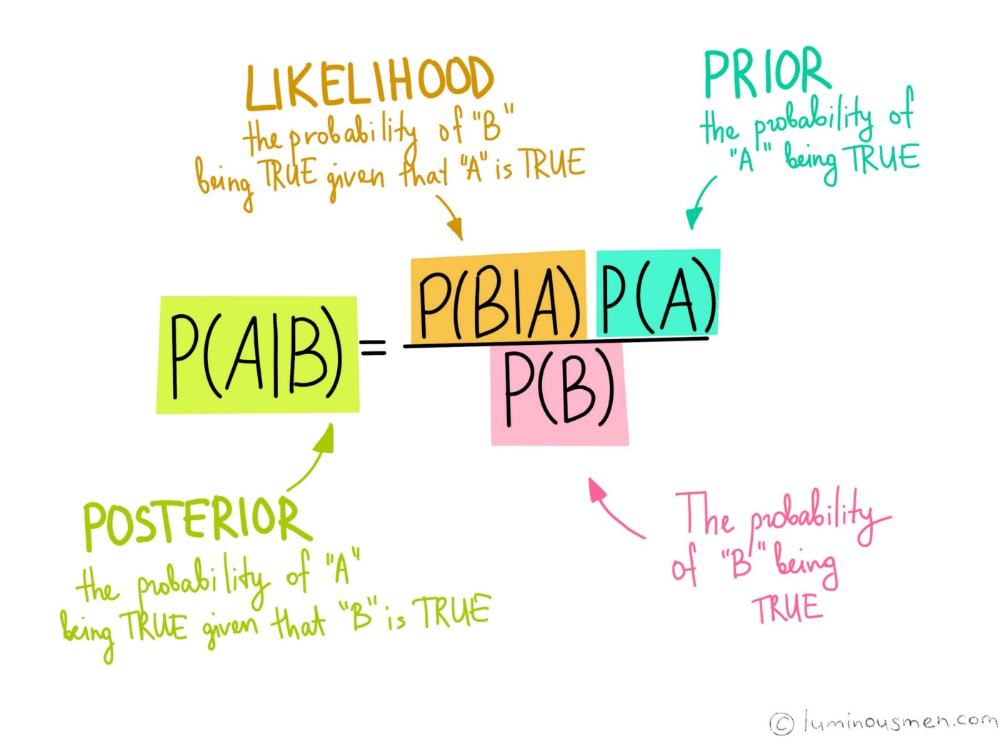
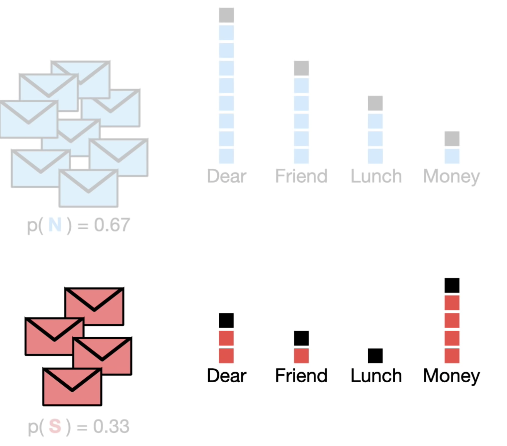

Natural Language Processing
Maîtriser le pipeline NLP classique (preprocessing → vectorisation → modélisation) avec NLTK et scikit-learn, du nettoyage de texte brut jusqu'à la classification (Naive Bayes) et le topic modeling (LDA).
📋 Cheatsheet — Natural Language Processing
Nettoyage de base (Python built-in)
text.strip() # supprime les espaces en début/fin
text.strip('abc') # supprime les chars a, b, c en début/fin
text.lower() # met en minuscules
text.replace("koala", "panda") # remplace toutes les occurrences
text.split("/") # découpe en liste sur le séparateur "/"
## Supprimer les chiffres
''.join(c for c in text if not c.isdigit()) # garde uniquement les non-chiffres
## Supprimer la ponctuation
import string
for p in string.punctuation: # parcourt !"#$%&'()*+,-./:;<=>?@[\]^_`{|}~
text = text.replace(p, '') # remplace chaque ponctuation par rien
## Supprimer les tags HTML avec regex
import re
re.sub('<[^<]+?>', '', html_text) # supprime tout tag <...>
## Extraire des emails avec regex
re.findall(r'[\w.+-]+@[\w-]+\.[\w.-]+', text) # retourne la liste des emails trouvésPreprocessing avancé (NLTK)
from nltk.tokenize import word_tokenize
tokens = word_tokenize(text) # tokenise : phrase → liste de mots
from nltk.corpus import stopwords
stop_words = set(stopwords.words('english')) # charge les stopwords anglais
tokens_clean = [w for w in tokens if w not in stop_words] # supprime les stopwords
from nltk.stem import WordNetLemmatizer
lemmatizer = WordNetLemmatizer()
lemmatizer.lemmatize("running", pos="v") # "run" — lemmatise un verbe
lemmatizer.lemmatize("hours", pos="n") # "hour" — lemmatise un nomPipeline de nettoyage complet
def clean(sentence):
sentence = sentence.lower() # minuscules
sentence = ''.join(c for c in sentence if not c.isdigit()) # sans chiffres
for p in string.punctuation:
sentence = sentence.replace(p, '') # sans ponctuation
sentence = sentence.strip() # sans espaces
tokens = word_tokenize(sentence) # tokeniser
tokens = [w for w in tokens if w not in stop_words] # sans stopwords
tokens = [WordNetLemmatizer().lemmatize(w, pos="v") for w in tokens] # lemmatiser
return ' '.join(tokens) # reconstruire la phraseVectorisation
from sklearn.feature_extraction.text import CountVectorizer, TfidfVectorizer
## Bag-of-Words (comptage brut)
cv = CountVectorizer() # instancie le vectoriseur
X = cv.fit_transform(texts) # retourne une matrice sparse (docs × mots)
cv.get_feature_names_out() # liste des mots du vocabulaire
## TF-IDF (pondération fréquence/rareté)
tfidf = TfidfVectorizer() # instancie le vectoriseur TF-IDF
X = tfidf.fit_transform(texts) # matrice sparse pondéréeParamètres clés des vectoriseurs
TfidfVectorizer(
max_df=0.9, # ignore les mots présents dans >90% des docs
min_df=2, # ignore les mots présents dans <2 docs
max_features=5000, # garde uniquement les 5000 mots les plus fréquents
ngram_range=(1, 2) # capture unigrams + bigrams
)Naive Bayes
from sklearn.naive_bayes import MultinomialNB
from sklearn.pipeline import make_pipeline
pipeline = make_pipeline(
TfidfVectorizer(), # vectorise le texte
MultinomialNB(alpha=1.0) # classifieur Naive Bayes (alpha = smoothing)
)
pipeline.fit(X_train, y_train) # entraîne le pipeline
pipeline.predict(X_new) # prédit les classesLDA (Topic Modeling)
from sklearn.decomposition import LatentDirichletAllocation
lda = LatentDirichletAllocation(
n_components=5, # nombre de topics à détecter
max_iter=100 # nombre d'itérations
)
lda.fit(X_vectorized) # entraîne sur la matrice vectorisée
doc_topics = lda.transform(X_vectorized) # matrice document × topic (probas)
lda.components_ # matrice topic × mots (poids)⚠️ Récapitulatif — Erreurs clés à éviter
Oublier de mettre en minuscules avant de vectoriser
❌ "Football" et "football" sont traités comme deux mots différents
python
CountVectorizer().fit_transform(["Football is great", "I love football"])
# → 2 colonnes distinctes : "Football" et "football"
✅ Toujours .lower() avant de vectoriser (ou utiliser lowercase=True, activé par défaut dans sklearn)
python
texts = [t.lower() for t in texts] # normalise la casse
Supprimer les stopwords pour du sentiment analysis
❌ Le mot "not" est un stopword mais change complètement le sens
python
# "I do NOT like this" → après suppression stopwords → "like" → sentiment positif !
✅ Ne supprimer les stopwords que pour le topic modeling, pas pour le sentiment analysis
Utiliser CountVectorizer sans contrôler la taille du vocabulaire
❌ Vocabulaire gigantesque → curse of dimensionality
python
CountVectorizer() # aucun filtre → des milliers de colonnes inutiles
✅ Utiliser max_df, min_df et max_features pour limiter le vocabulaire
python
CountVectorizer(max_df=0.95, min_df=2, max_features=5000)
Ignorer le smoothing dans Naive Bayes
❌ Un mot absent du corpus spam → probabilité = 0 → produit entier = 0
python
MultinomialNB(alpha=0) # pas de smoothing → probabilités nulles
✅ Toujours garder alpha > 0 (défaut = 1.0 = Laplace smoothing)
python
MultinomialNB(alpha=1.0) # smoothing pour éviter les probas nulles
Ne pas tuner simultanément le vectoriseur et le modèle
❌ Tuner le modèle seul sans toucher aux hyperparamètres du vectoriseur
python
GridSearchCV(MultinomialNB(), {'alpha': [0.1, 1]}) # ne tune que le NB
✅ Utiliser un pipeline et tuner les deux ensemble
python
pipe = make_pipeline(TfidfVectorizer(), MultinomialNB())
GridSearchCV(pipe, {
'tfidfvectorizer__ngram_range': [(1,1), (1,2)],
'multinomialnb__alpha': [0.1, 1.0]
})
1) Text Preprocessing
1.1 Pourquoi preprocesser du texte ?
Les algorithmes de ML ne comprennent que des nombres. Le preprocessing transforme du texte brut en données exploitables. Les étapes classiques sont : lowercase, suppression chiffres/ponctuation, split, tokenization, suppression stopwords, lemmatisation.

1.2 Nettoyage de base avec Python
strip — supprime les espaces en début/fin de chaîne :
texts = [
' Bonjour, comment ça va ? ',
' Heyyyyy, how are you doing ? ',
]
[text.strip() for text in texts]## Output
## ['Bonjour, comment ça va ?', 'Heyyyyy, how are you doing ?']On peut aussi spécifier des caractères à supprimer :
text = "abcd Who is abcd ? abcd"
text.strip('bdac')## Output
## " Who is abcd ? "replace — remplace des sous-chaînes :
"I love koalas, koalas are cute.".replace("koala", "panda")## Output
## 'I love pandas, pandas are cute.'split — découpe une chaîne en liste :
"linkin park / metallica / red hot chili peppers".split("/")## Output
## ['linkin park ', ' metallica ', ' red hot chili peppers']lower — uniformise la casse :
"FOOTBALL is my passion. Who else loves fOOtBaLL ?".lower()## Output
## 'football is my passion. who else loves football ?'Supprimer les chiffres :
text = "we waited for so long, like 30 minutes"
''.join(char for char in text if not char.isdigit())## Output
## 'we waited for so long, like minutes'Supprimer la ponctuation :
import string
text = "I love bubble tea! OMG so #tasty @channel XOXO"
for p in string.punctuation:
text = text.replace(p, '')
## → 'I love bubble tea OMG so tasty channel XOXO'Combo complet :
def basic_cleaning(sentence):
sentence = sentence.lower() # minuscules
sentence = ''.join(c for c in sentence if not c.isdigit()) # sans chiffres
for p in string.punctuation:
sentence = sentence.replace(p, '') # sans ponctuation
sentence = sentence.strip() # sans espaces
return sentence
[basic_cleaning(s) for s in [" I LOVE Pizza 999 @^_^", " Le Wagon - 666"]]## Output
## ['i love pizza', 'le wagon']Supprimer des tags HTML avec RegEx :
import re
re.sub('<[^<]+?>', '', "<head><body>Hello Le Wagon!</body></head>")## Output
## 'Hello Le Wagon!'Extraire des emails :
re.findall(r'[\w.+-]+@[\w-]+\.[\w.-]+', "authored by darkvador@gmail.com and batman@outlook.com")## Output
## ['darkvador@gmail.com', 'batman@outlook.com']1.3 Preprocessing avancé avec NLTK
Tokenizing — découper une phrase en tokens (mots individuels) :
from nltk.tokenize import word_tokenize
word_tokenize('It is during our darkest moments that we must focus to see the light')## Output
## ['It', 'is', 'during', 'our', 'darkest', 'moments', 'that', 'we', 'must', 'focus', 'to', 'see', 'the', 'light']Stopwords — mots trop fréquents qui n'apportent pas d'information :
from nltk.corpus import stopwords
stop_words = set(stopwords.words('english'))
tokens = ["i", "am", "going", "to", "go", "to", "the", "club", "and", "party"]
[w for w in tokens if w not in stop_words] # garde les mots significatifs## Output
## ['going', 'go', 'club', 'party']Attention : "not" est un stopword ! Ne pas supprimer les stopwords pour du sentiment analysis.
✅ Utile pour : topic modeling
❌ Dangereux pour : sentiment analysis, authorship attribution
Lemmatizing — trouver la racine des mots pour les regrouper par sens :

from nltk.stem import WordNetLemmatizer
lemmatizer = WordNetLemmatizer()
lemmatizer.lemmatize("running", pos="v") # "run"
lemmatizer.lemmatize("hours", pos="n") # "hour"1.4 Pipeline complet de preprocessing
Les 4 étapes dans l'ordre :
- Basic cleaning (lower, chiffres, ponctuation, strip)
- Tokenizing (phrase → liste de mots)
- Suppression des stopwords (si topic modeling)
- Lemmatizing (racine des mots)
| Mot original | Après lemmatisation (verbe) | Après lemmatisation (nom) | running | run | run |
|---|---|---|---|---|---|
| eating | eat | eat | swimming | swim | swim |
| playing | play | play | hours | hours | hour |
Takeaway : le preprocessing texte combine des opérations Python built-in (strip, replace, lower, split) et des techniques NLP (tokenize, stopwords, lemmatize).
2) Vectorisation
Les algorithmes de ML ne traitent que des nombres. Vectoriser = convertir du texte brut en représentation numérique.
2.1 Bag-of-Words (BoW)
La représentation Bag-of-Words compte combien de fois chaque mot apparaît dans chaque document :
from sklearn.feature_extraction.text import CountVectorizer
texts = [
'the young dog is running with the cat',
'running is good for your health',
'your cat is young',
]
cv = CountVectorizer()
X = cv.fit_transform(texts) # matrice sparse (docs × mots)
cv.get_feature_names_out() # vocabulaire appris## Output
## array(['cat', 'dog', 'for', 'good', 'health', 'is', 'running', 'the', 'with', 'young', 'your'])Limites du BoW :
- ❌ Ne prend pas en compte l'ordre des mots
- ❌ Ne prend pas en compte la longueur du document → TF-IDF
- ❌ Ne capture pas le contexte → N-grams
2.2 TF-IDF
Intuition : donner un poids élevé aux mots fréquents dans un document mais rares dans le corpus.
$\text{TF-IDF}_{x,d} = \underbrace{\text{tf}_{x,d}}_{\text{fréquence dans le doc}} \times \underbrace{\left[\log\left(\frac{N+1}{\text{df}_x+1}\right) + 1\right]}_{\text{inverse document frequency}}$
Où :
- $\text{tf}_{x,d}$ = nombre d'occurrences du mot $x$ dans le document $d$ / nombre total de mots dans $d$
- $\text{df}_x$ = nombre de documents contenant le mot $x$
- $N$ = nombre total de documents
from sklearn.feature_extraction.text import TfidfVectorizer
tfidf = TfidfVectorizer()
X = tfidf.fit_transform(texts) # matrice pondérée par TF-IDFExemple : sur eurosport.com/football, le mot "football" apparaît partout → TF-IDF faible. Le mot "concussion" n'apparaît que dans 2 articles → TF-IDF élevé → plus discriminant.
2.3 Contrôler la taille du vocabulaire
CountVectorizer(
max_df=2, # supprime les mots apparaissant dans >2 documents
min_df=1, # supprime les mots apparaissant dans <1 document
max_features=3 # garde uniquement les 3 mots les plus fréquents
)| Paramètre | Type | Effet |
|---|---|---|
max_df=20 | int | Ignore les mots dans >20 docs |
max_features=5000 | int | Garde les top 5000 mots |
2.4 N-grams
Les N-grams capturent le contexte en considérant des séquences de mots :
- Unigram (n=1) : "mathematics"
- Bigram (n=2) : "machine learning"
- Trigram (n=3) : "natural language processing"
CountVectorizer(ngram_range=(1, 2)) # unigrams + bigrams
CountVectorizer(ngram_range=(2, 2)) # bigrams uniquement
CountVectorizer(ngram_range=(1, 3)) # unigrams + bigrams + trigramsProblème résolu : "I like the movie but NOT the actors" vs "I like the actors but NOT the movie" → identiques en BoW, distinguables avec des bigrams !
Takeaway Vectorisation :
- CountVectorizer = comptage brut
- TfidfVectorizer = pondération (robuste à la longueur du document)
- Paramètres clés : min_df, max_df, max_features, ngram_range
3) Naive Bayes (Classification)
3.1 Le problème de classification d'e-mails
🎯 Classifier les e-mails en Normal (N) ou Spam (S) à partir de leur contenu.

3.2 Théorème de Bayes appliqué
La probabilité qu'un e-mail contenant les mots $x_1, x_2, \ldots, x_k$ soit du spam :
$P(S | x_1, \ldots, x_k) = \frac{P(S) \times \prod_{i=1}^{k} P(x_i | S)}{P(S) \times \prod_{i=1}^{k} P(x_i | S) + P(N) \times \prod_{i=1}^{k} P(x_i | N)}$
L'hypothèse naïve : les mots sont conditionnellement indépendants → on peut multiplier les probabilités individuelles.

3.3 Exemple calculatoire
Avec 8 e-mails normaux et 4 spams, calculer $P(S | \text{"Dear"}, \text{"Friend"})$ :
Probabilités a priori :
- $P(N) = 8/12 = 0.67$, $P(S) = 4/12 = 0.33$
Vraisemblances :
- $P(text{"Dear"}|N) = 8/17 = 0.47$, $P(\text{"Friend"}|N) = 5/17 = 0.29$
- $P(text{"Dear"}|S) = 2/7 = 0.29$, $P(\text{"Friend"}|S) = 1/7 = 0.14$
Résultat :
$P(S | \text{"Dear"}, \text{"Friend"}) = \frac{0.0136}{0.0136 + 0.0923} = 0.129 = 12.9\%$
3.4 Smoothing
Si un mot n'apparaît jamais dans les spams → $P(\text{mot}|S) = 0$ → le produit entier = 0.
Solution : ajouter $\alpha > 0$ aux comptages (Laplace smoothing). Le paramètre alpha dans MultinomialNB contrôle ce lissage (défaut = 1.0).

3.5 Avantages et inconvénients
| ✅ Avantages | ❌ Inconvénients |
|---|---|
| Très rapide (pas d'apprentissage itératif) | Ne capture pas les dépendances entre mots |
| Pas de paramètres β à apprendre |
3.6 Implémentation avec scikit-learn
import pandas as pd
from sklearn.pipeline import make_pipeline
from sklearn.feature_extraction.text import TfidfVectorizer
from sklearn.naive_bayes import MultinomialNB
from sklearn.model_selection import cross_validate
data = pd.read_csv("data/emails.csv") # colonnes : text, spam
X = data["text"]
y = data["spam"]
## Pipeline : vectorisation + Naive Bayes
pipeline = make_pipeline(TfidfVectorizer(), MultinomialNB())
## Cross-validation
cv_results = cross_validate(pipeline, X, y, cv=5, scoring=["recall"])
print(cv_results["test_recall"].mean()) # ~0.45 recall sur les spams3.7 Tuning simultané vectoriseur + modèle
from sklearn.model_selection import GridSearchCV
params = {
'tfidfvectorizer__ngram_range': [(1,1), (2,2)],
'multinomialnb__alpha': [0.1, 1.0]
}
grid = GridSearchCV(pipeline, params, scoring="recall", cv=5, n_jobs=-1)
grid.fit(X, y)
print(grid.best_score_) # ~0.95 recall
print(grid.best_params_) # {'alpha': 0.1, 'ngram_range': (1,1)}Le tuning conjoint fait passer le recall de ~45% à ~95% ! Les hyperparamètres du vectoriseur ont un impact majeur.
4) Topic Modeling — Latent Dirichlet Allocation (LDA)
4.1 Qu'est-ce que la LDA ?
La Latent Dirichlet Allocation est un algorithme non supervisé pour découvrir des topics cachés dans un corpus de documents.
- Latent = topics cachés
- Dirichlet = type de distribution de probabilité
- Chaque document = mélange de topics
- Chaque topic = mélange de mots
4.2 Inputs & Outputs
Inputs :
- Matrice document-terme (vectorisée via CountVectorizer ou TfidfVectorizer)
- Nombre de topics (
n_components) - Nombre d'itérations (
max_iter)
Output :
- Topics = groupes de mots cohérents, interprétables comme des "composantes principales non-linéaires"
4.3 Implémentation
Étape 1 — Nettoyage
def cleaning(sentence):
sentence = sentence.strip().lower() # strip + lower
sentence = ''.join(c for c in sentence if not c.isdigit()) # sans chiffres
for p in string.punctuation:
sentence = sentence.replace(p, '') # sans ponctuation
tokens = word_tokenize(sentence) # tokeniser
tokens = [w for w in tokens if w not in stop_words] # sans stopwords
tokens = [WordNetLemmatizer().lemmatize(w, pos="v") for w in tokens] # lemmatiser
return ' '.join(tokens)
cleaned = documents["documents"].apply(cleaning)Étape 2 — Vectorisation
vectorizer = TfidfVectorizer()
X = vectorizer.fit_transform(cleaned)Étape 3 — Entraîner la LDA
from sklearn.decomposition import LatentDirichletAllocation
lda = LatentDirichletAllocation(n_components=2, max_iter=100)
lda.fit(X)Document-Topic Matrix (mélange de topics par document) :
doc_topics = lda.transform(X) # shape (n_docs, n_topics) — probasTopic-Word Matrix (mélange de mots par topic) :
topic_words = pd.DataFrame(
lda.components_, # poids de chaque mot dans chaque topic
columns=vectorizer.get_feature_names_out()
)Afficher les top mots par topic :
def print_topics(lda_model, vectorizer, top_words=5):
topic_df = pd.DataFrame(
lda_model.components_,
columns=vectorizer.get_feature_names_out()
)
for i in range(topic_df.shape[0]):
print(f"--- Topic {i} ---")
print(topic_df.iloc[i].sort_values(ascending=False).head(top_words))
print_topics(lda, vectorizer, 5)4.4 LDA Under the Hood
L'algorithme fonctionne de manière itérative :
- Choisir le nombre de topics (
n_components) - Assigner aléatoirement chaque mot de chaque document à un topic
- Pour chaque mot, recalculer :
- Document Mixture $P(\text{topic } t | \text{document } d)$ — à quelle fréquence le topic $t$ apparaît dans le document $d$
- Topic Mixture $P(\text{mot } w | \text{topic } t)$ — à quelle fréquence le mot $w$ apparaît dans le topic $t$
- Mise à jour : $P(\text{mot } w, \text{topic } t) = P(t|d) \times P(w|t)$
- Répéter l'étape 2 sur de nombreuses itérations → les topics convergent
Améliorer le topic modeling : augmenter le nombre de documents, augmenter max_iter, ajuster n_components.
Bibliographie
- 👉 NLTK — official website
- 👉 sklearn CountVectorizer
- 👉 sklearn TfidfVectorizer
- 👉 sklearn MultinomialNB
- 👉 sklearn LatentDirichletAllocation
- 👉 Latent Dirichlet Allocation — Blei, Ng, Jordan (2003)
- 👉 Wikipedia — NLP
Challenges
Construire un pipeline complet NLP : preprocessing du texte (nettoyage, tokenisation, lemmatisation) → vectorisation (TF-IDF) → classification (Naive Bayes) et topic modeling (LDA).
🧭 Introduction
Pourquoi le NLP ?
Imagine que tu veuilles apprendre une langue étrangère — disons le japonais. Avant de pouvoir lire un roman, tu dois d'abord apprendre l'alphabet, puis les mots de base, puis comprendre comment les mots se combinent pour former un sens. Le NLP (Natural Language Processing — Traitement Automatique du Langage Naturel), c'est exactement ça, mais pour une machine.
Un algorithme de Machine Learning ne comprend que des nombres. Il ne "lit" pas. Ton travail en NLP consiste à transformer du texte brut ("J'adore ce film !") en une suite de chiffres qu'un modèle peut analyser.
Ce cours couvre le pipeline NLP classique :
- Preprocessing — nettoyer le texte brut (retirer la ponctuation, uniformiser la casse, etc.)
- Bag-of-Words — représenter chaque texte par le comptage de ses mots
- TF-IDF — pondérer les mots par leur importance réelle
- Classification (Naive Bayes) — prédire une catégorie (spam / pas spam)
- Topic Modeling (LDA) — découvrir automatiquement les thèmes d'un corpus
5 choses à retenir absolument
- Les modèles ne lisent pas — ils manipulent des vecteurs de nombres.
- Le preprocessing est crucial : "Football" et "football" sont deux mots différents pour une machine si on ne normalise pas la casse.
- Le Bag-of-Words compte les mots ; le TF-IDF les pondère selon leur rareté dans le corpus.
- En sentiment analysis, ne jamais supprimer le mot "not" (c'est un stopword, mais il change tout le sens d'une phrase).
- Un pipeline
TfidfVectorizer → MultinomialNBbien tuné peut atteindre ~95% de recall sur la détection de spam.
Analogie fil rouge
Apprendre une langue étrangère, c'est comme construire un pipeline NLP :
- Tu mémorises le vocabulaire → Bag-of-Words
- Tu comprends que "le" et "la" ne portent pas de sens fort → Stopwords
- Tu ramènes "allait", "irait", "ira" à "aller" → Lemmatisation
- Tu retiens que "machine learning" est un concept entier, pas deux mots séparés → N-grams
- Tu attribues une importance à un mot rare mais précis → TF-IDF
Mini-plan du cours
1. Preprocessing → nettoyer le texte
2. Vectorisation → transformer le texte en nombres (BoW, TF-IDF, N-grams)
3. Naive Bayes → classifier des textes (ex : spam / ham)
4. LDA → découvrir des thèmes cachés dans un corpus1. Preprocessing — Nettoyer le texte
1.1 Pourquoi nettoyer ?
Imagine deux phrases :
" I LOVE Pizza 999 @^_^""i love pizza"
Pour un humain, c'est la même idée. Pour une machine, ce sont des entrées totalement différentes. Le preprocessing uniformise le texte pour que les mots identiques soient reconnus comme tels.
Le preprocessing, c'est comme préparer des ingrédients avant de cuisiner : tu épluches, tu laves, tu coupes. Sans ça, la recette ne marche pas.
1.2 Nettoyage de base avec Python (built-in)
Python fournit des méthodes de chaîne (str) qui couvrent la majorité des besoins.
Supprimer les espaces en début/fin — .strip()
texte = " Bonjour, comment ça va ? "
texte.strip()
# → 'Bonjour, comment ça va ?'Mettre en minuscules — .lower()
Sans .lower(), "Football" et "football" sont deux mots distincts pour la machine.
"FOOTBALL is my passion. Who else loves fOOtBaLL ?".lower()
# → 'football is my passion. who else loves football ?'Remplacer des mots — .replace()
"I love koalas, koalas are cute.".replace("koala", "panda")
# → 'I love pandas, pandas are cute.'Supprimer les chiffres
On garde uniquement les caractères qui ne sont PAS des chiffres :
texte = "we waited for so long, like 30 minutes"
''.join(char for char in texte if not char.isdigit())
# → 'we waited for so long, like minutes'Supprimer la ponctuation
string.punctuation contient tous les caractères de ponctuation standard (!"#$%&'()*+,-./:;<=>?@[\]^_{|}~) :
import string
texte = "I love bubble tea! OMG so #tasty @channel XOXO"
for p in string.punctuation: # on parcourt chaque signe de ponctuation
texte = texte.replace(p, '') # on le remplace par rien (= suppression)
# → 'I love bubble tea OMG so tasty channel XOXO'Pipeline de nettoyage de base — tout en une fonction
import string
def basic_cleaning(sentence):
sentence = sentence.lower() # 1. minuscules
sentence = ''.join(c for c in sentence if not c.isdigit()) # 2. sans chiffres
for p in string.punctuation:
sentence = sentence.replace(p, '') # 3. sans ponctuation
sentence = sentence.strip() # 4. sans espaces
return sentence
# Test
basic_cleaning(" I LOVE Pizza 999 @^_^")
# → 'i love pizza'Supprimer des balises HTML — RegEx
La bibliothèque re permet d'utiliser des expressions régulières (des formules pour décrire des motifs de texte) :
import re
re.sub('<[^<]+?>', '', "<head><body>Hello Le Wagon!</body></head>")
# → 'Hello Le Wagon!'
# re.sub(motif, remplacement, texte)
# '<[^<]+?>' signifie : tout ce qui commence par < et finit par >Une expression régulière est un "motif" pour décrire une forme de texte. <[^<]+?> se lit : un <, suivi de n'importe quels caractères sauf <, suivi d'un >. Cela cible les balises HTML.
1.3 Preprocessing avancé avec NLTK
NLTK (Natural Language Toolkit) est une bibliothèque Python spécialisée dans le traitement du langage naturel.
Tokenisation — découper en mots individuels
Un token est une unité de texte (généralement un mot). La tokenisation, c'est passer d'une phrase à une liste de mots.
from nltk.tokenize import word_tokenize
phrase = 'It is during our darkest moments that we must focus to see the light'
word_tokenize(phrase)
# → ['It', 'is', 'during', 'our', 'darkest', 'moments', 'that',
# 'we', 'must', 'focus', 'to', 'see', 'the', 'light']Stopwords — supprimer les mots vides
Les stopwords sont des mots très fréquents qui n'apportent pas de sens particulier : "the", "is", "a", "to", etc. On peut les supprimer pour se concentrer sur les mots porteurs de sens.
from nltk.corpus import stopwords
stop_words = set(stopwords.words('english')) # liste des mots vides en anglais
tokens = ["i", "am", "going", "to", "go", "to", "the", "club", "and", "party"]
[w for w in tokens if w not in stop_words] # on garde uniquement les mots significatifs
# → ['going', 'go', 'club', 'party']"not" est un stopword en anglais. Si tu l'enlèves, "I do NOT like this" devient "like" → le modèle croit que c'est positif ! Ne supprime jamais les stopwords pour une tâche d'analyse de sentiment. Réserve cette étape au topic modeling uniquement.
Lemmatisation — ramener les mots à leur forme de base
La lemmatisation regroupe les variantes d'un mot sous une forme canonique (le "lemme"). Par exemple : "running", "ran", "runs" → "run".
from nltk.stem import WordNetLemmatizer
lemmatizer = WordNetLemmatizer()
lemmatizer.lemmatize("running", pos="v") # pos="v" = verbe → "run"
lemmatizer.lemmatize("hours", pos="n") # pos="n" = nom → "hour"| Mot original | Lemme (verbe) | Lemme (nom) |
|---|---|---|
| running | run | run |
| eating | eat | eat |
| hours | hours | hour |
| playing | play | play |
La lemmatisation est plus intelligente que le simple "stemming" (couper la fin du mot). "better" → lemme : "good". Le stemming donnerait "bett". La lemmatisation comprend la langue.
1.4 Pipeline complet de preprocessing
On assemble toutes les étapes dans l'ordre :
import string
from nltk.tokenize import word_tokenize
from nltk.corpus import stopwords
from nltk.stem import WordNetLemmatizer
stop_words = set(stopwords.words('english'))
def clean(sentence):
# Étape 1 : nettoyage de base
sentence = sentence.lower() # minuscules
sentence = ''.join(c for c in sentence if not c.isdigit()) # sans chiffres
for p in string.punctuation:
sentence = sentence.replace(p, '') # sans ponctuation
sentence = sentence.strip() # sans espaces
# Étape 2 : tokenisation
tokens = word_tokenize(sentence) # phrase → liste de mots
# Étape 3 : suppression des stopwords (uniquement pour topic modeling)
tokens = [w for w in tokens if w not in stop_words]
# Étape 4 : lemmatisation
tokens = [WordNetLemmatizer().lemmatize(w, pos="v") for w in tokens]
# On reconstruit une phrase propre
return ' '.join(tokens)
# Exemple
clean("I was RUNNING to the club with 3 friends!")
# → 'run club friend'Résumé preprocessing :
- lower() + suppression chiffres/ponctuation/espaces = nettoyage de base
- word_tokenize() = découpage en tokens
- Suppression stopwords = uniquement pour topic modeling, PAS pour sentiment analysis
- lemmatize() = regrouper les variantes d'un même mot
2. Vectorisation — Transformer le texte en nombres
Une fois le texte nettoyé, il faut le convertir en nombres. C'est ce qu'on appelle la vectorisation.
2.1 Bag-of-Words (Sac de mots)
L'idée du Bag-of-Words (BoW) est simple : on ignore l'ordre des mots, on compte juste combien de fois chaque mot apparaît dans chaque document.
Imagine un "sac" dans lequel tu vides tous les mots d'un texte, sans te souvenir de l'ordre dans lequel ils étaient. Tu comptes ensuite combien il y a de chaque mot. C'est le BoW.
Exemple concret avec 3 phrases :
from sklearn.feature_extraction.text import CountVectorizer
texts = [
'the young dog is running with the cat', # document 0
'running is good for your health', # document 1
'your cat is young', # document 2
]
cv = CountVectorizer() # crée le vectoriseur
X = cv.fit_transform(texts) # apprend le vocabulaire et transforme
cv.get_feature_names_out() # liste tous les mots appris
# → ['cat', 'dog', 'for', 'good', 'health', 'is', 'running', 'the', 'with', 'young', 'your']La matrice résultante X ressemble à ceci (une ligne par document, une colonne par mot) :
| cat | dog | for | good | health | is | running | the | with | young | your | |
|---|---|---|---|---|---|---|---|---|---|---|---|
| doc 0 | 1 | 1 | 0 | 0 | 0 | 1 | 1 | 2 | 1 | 1 | 0 |
| doc 1 | 0 | 0 | 1 | 1 | 1 | 1 | 1 | 0 | 0 | 0 | 1 |
| doc 2 | 1 | 0 | 0 | 0 | 0 | 1 | 0 | 0 | 0 | 1 | 1 |
Limites du Bag-of-Words :
- Il ignore l'ordre des mots : "dog bites man" = "man bites dog"
- Il ne tient pas compte de la longueur du document : un doc de 1000 mots aura des comptages bien plus élevés qu'un doc de 10 mots
- Il ne capture pas le contexte : "not good" est traité comme "not" + "good" séparément
2.2 TF-IDF — Pondération intelligente
Le TF-IDF (Term Frequency – Inverse Document Frequency) résout le problème de longueur du BoW et donne plus d'importance aux mots rares mais pertinents.
Intuition : sur un site de sport, le mot "football" apparaît partout → il ne dit rien de spécifique. Mais le mot "commotion cérébrale" n'apparaît que dans 2 articles → il est très discriminant pour ces articles.
La formule TF-IDF
- (A) TF — Term Frequency : fréquence du mot $x$ dans le document $d$
- (B) IDF — Inverse Document Frequency : mesure la rareté du mot $x$ dans tout le corpus
- $N$ = nombre total de documents dans le corpus
- $\text{df}_x$ = nombre de documents contenant le mot $x$
- Si $x$ est dans tous les documents → $\text{df}_x \approx N$ → $\log(\frac{N+1}{N+1}) = 0$ → TF-IDF faible
- Si $x$ est dans peu de documents → $\text{df}_x \approx 1$ → $\log(\frac{N+1}{2})$ grand → TF-IDF élevé
Exemple numérique chiffré
Corpus de $N = 100$ documents. Le mot "football" apparaît dans 80 documents, le mot "commotion" dans 2.
Pour un document où "football" apparaît 3 fois sur 150 mots :
Pour "commotion" (1 occurrence sur 150 mots, dans 2 documents du corpus) :
"Commotion" obtient un score plus élevé que "football", même avec moins d'occurrences — car il est beaucoup plus rare et donc plus informatif.
Implémentation avec sklearn
from sklearn.feature_extraction.text import TfidfVectorizer
tfidf = TfidfVectorizer() # instancie le vectoriseur TF-IDF
X = tfidf.fit_transform(texts) # calcule les scores TF-IDF pour chaque mot
# X est une matrice sparse (docs × mots) avec des scores flottants entre 0 et 12.3 Contrôler la taille du vocabulaire
Sans contrôle, le vocabulaire peut atteindre des dizaines de milliers de colonnes — ce qui ralentit tout et nuit aux performances (c'est la "malédiction de la dimensionnalité").
from sklearn.feature_extraction.text import TfidfVectorizer
tfidf = TfidfVectorizer(
max_df=0.9, # ignore les mots présents dans plus de 90% des documents
# (trop fréquents → peu informatifs, comme "the", "is")
min_df=2, # ignore les mots présents dans moins de 2 documents
# (trop rares → probablement des fautes de frappe)
max_features=5000, # ne garde que les 5000 mots les plus fréquents
ngram_range=(1, 2) # inclut les unigrams ET les bigrams (voir section suivante)
)| Paramètre | Valeur exemple | Ce que ça fait |
|---|---|---|
max_df=0.9 | 0.9 | Ignore les mots dans >90% des docs |
min_df=2 | 2 | Ignore les mots dans <2 docs |
max_features=5000 | 5000 | Garde les 5000 mots les plus fréquents |
2.4 N-grams — Capturer le contexte
Un N-gram est une séquence de N mots consécutifs.
- Unigram (n=1) :
"machine","learning" - Bigram (n=2) :
"machine learning" - Trigram (n=3) :
"natural language processing"
Pourquoi c'est utile ?
Compare ces deux phrases :
- "I like the movie but NOT the actors"
- "I like the actors but NOT the movie"
En BoW (unigrams), les deux phrases donnent exactement les mêmes mots → impossible à distinguer.
Avec des bigrams, "NOT the actors" et "NOT the movie" sont des features distinctes → le modèle peut les différencier.
from sklearn.feature_extraction.text import CountVectorizer
CountVectorizer(ngram_range=(1, 1)) # unigrams seulement (défaut)
CountVectorizer(ngram_range=(1, 2)) # unigrams + bigrams
CountVectorizer(ngram_range=(2, 2)) # bigrams seulement
CountVectorizer(ngram_range=(1, 3)) # unigrams + bigrams + trigramsPlus on augmente N, plus on capture de contexte — mais plus le vocabulaire explose en taille. En pratique, ngram_range=(1, 2) est un bon point de départ.
Récap vectorisation :
- CountVectorizer = Bag-of-Words (comptage brut)
- TfidfVectorizer = pondération par rareté (meilleur en général)
- Paramètres clés : min_df, max_df, max_features, ngram_range
- Les deux retournent une matrice sparse : docs × mots
3. Classification avec Naive Bayes
3.1 Le problème : détecter les spams
On veut classifier automatiquement des e-mails en deux catégories : Spam (S) ou Normal/Ham (N).
On a un corpus de 12 e-mails étiquetés, et on veut prédire la classe d'un nouveau message contenant les mots "Dear" et "Friend".
3.2 L'idée de Bayes
Le théorème de Bayes permet de calculer la probabilité qu'un e-mail soit un spam sachant qu'il contient certains mots.
Symboles :
- $P(S)$ = probabilité a priori que n'importe quel e-mail soit un spam
- $P(x_i \mid S)$ = probabilité que le mot $x_i$ apparaisse dans un spam
- Le dénominateur normalise pour que la somme des probabilités fasse 1
L'hypothèse naïve : les mots sont indépendants entre eux. C'est faux dans la réalité (les mots sont liés par le contexte), mais cela simplifie énormément le calcul et donne de bons résultats en pratique.
3.3 Exemple chiffré pas à pas
Données : 12 e-mails → 8 normaux (N), 4 spams (S).
Probabilités a priori :
Vraisemblances (en comptant les mots dans les e-mails étiquetés) :
| Mot | Dans les N (17 mots total) | Dans les S (7 mots total) |
|---|---|---|
| "Dear" | 8/17 = 0.47 | 2/7 = 0.29 |
| "Friend" | 5/17 = 0.29 | 1/7 = 0.14 |
Calcul :
- Numérateur (spam) : $0.33 \times 0.29 \times 0.14 = 0.0134$
- Numérateur (normal) : $0.67 \times 0.47 \times 0.29 = 0.0914$
Conclusion : un e-mail contenant "Dear" et "Friend" a seulement 12.8% de chances d'être un spam. Le modèle le classe comme Normal.
3.4 Le smoothing — Éviter les probabilités nulles
Problème : si un mot n'a jamais été vu dans les spams du corpus d'entraînement, alors $P(\text{mot} \mid S) = 0$. Et comme on multiplie les probabilités, le produit entier vaut 0 → toujours "non-spam", quelle que soit la phrase.
Solution — Laplace Smoothing : on ajoute une petite valeur $\alpha$ à tous les comptages pour éviter les zéros.
from sklearn.naive_bayes import MultinomialNB
MultinomialNB(alpha=1.0) # alpha=1.0 = Laplace smoothing classique
# alpha=0 = pas de smoothing (dangereux)
# alpha=0.1 = smoothing plus légerNe jamais utiliser alpha=0. Un seul mot inconnu met toute la probabilité à zéro.
3.5 Avantages et limites de Naive Bayes
| Avantages | Limites |
|---|---|
| Très rapide à entraîner | Suppose l'indépendance des mots (fausse en réalité) |
| Fonctionne bien avec peu de données | Ne capture pas l'ordre ni le contexte |
| Pas de poids $\beta$ à apprendre | Peut être battu par des modèles plus complexes |
3.6 Pipeline complet — Code sklearn
import pandas as pd
from sklearn.pipeline import make_pipeline
from sklearn.feature_extraction.text import TfidfVectorizer
from sklearn.naive_bayes import MultinomialNB
from sklearn.model_selection import cross_validate
# Chargement des données
data = pd.read_csv("data/emails.csv") # colonnes : "text" et "spam" (0 ou 1)
X = data["text"] # les e-mails (texte brut)
y = data["spam"] # les étiquettes (0=normal, 1=spam)
# Pipeline : vectorisation TF-IDF + classifieur Naive Bayes
pipeline = make_pipeline(
TfidfVectorizer(), # étape 1 : convertir le texte en vecteurs TF-IDF
MultinomialNB() # étape 2 : classifieur probabiliste
)
# Évaluation par cross-validation (5 folds)
cv_results = cross_validate(pipeline, X, y, cv=5, scoring=["recall"])
print(cv_results["test_recall"].mean()) # ~0.45 recall → médiocre, on peut mieux faire3.7 Tuner le pipeline — Vectoriseur ET modèle ensemble
L'erreur classique : n'optimiser que le modèle sans toucher aux paramètres du vectoriseur. Le vectoriseur a un impact énorme sur les performances.
from sklearn.model_selection import GridSearchCV
# Paramètres à tester (notation : 'nom_etape__parametre')
params = {
'tfidfvectorizer__ngram_range': [(1, 1), (1, 2)], # unigrams vs unigrams+bigrams
'multinomialnb__alpha': [0.1, 1.0] # smoothing léger vs standard
}
# Recherche sur grille
grid = GridSearchCV(pipeline, params, scoring="recall", cv=5, n_jobs=-1)
grid.fit(X, y)
print(grid.best_score_) # ~0.95 recall !
print(grid.best_params_) # ex: {'ngram_range': (1,1), 'alpha': 0.1}Le tuning conjoint vectoriseur + modèle fait passer le recall de ~45% à ~95% ! C'est l'une des optimisations les plus impactantes en NLP.
4. Topic Modeling — LDA (Latent Dirichlet Allocation)
4.1 Qu'est-ce que le topic modeling ?
Jusqu'ici, on avait des étiquettes (spam/ham). Le topic modeling est non supervisé : on n'a pas d'étiquettes. On demande à l'algorithme de découvrir lui-même des thèmes cachés dans un corpus.
Exemple concret : tu as 10 000 articles de presse. Tu demandes à la LDA de trouver 5 topics. Elle va découvrir quelque chose comme :
- Topic 0 : "goal", "player", "match", "team" → football
- Topic 1 : "interest", "rate", "bank", "inflation" → économie
- Topic 2 : "election", "vote", "candidate", "party" → politique
- etc.
LDA = Latent Dirichlet Allocation :
- Latent = les topics sont cachés (on ne les voit pas directement)
- Dirichlet = type de distribution de probabilité utilisée
- Chaque document = mélange de topics (ex : 70% sport, 30% économie)
- Chaque topic = mélange de mots (ex : "goal", "player", "match" ont des poids élevés pour le topic sport)
4.2 Comment ça fonctionne ? (intuitif)
L'algorithme travaille de façon itérative :
- On choisit le nombre de topics $K$ (ex : 5)
- On assigne aléatoirement chaque mot de chaque document à un topic
- Pour chaque mot, on recalcule :
- $P(\text{topic } t \mid \text{document } d)$ — à quelle fréquence ce topic apparaît dans ce document
- $P(\text{mot } w \mid \text{topic } t)$ — à quelle fréquence ce mot apparaît dans ce topic
- On met à jour : $P(w, t) = P(t \mid d) \times P(w \mid t)$
- On répète l'étape 3 pendant
max_iteritérations → les topics convergent progressivement
Imagine que tu tries des cartes aléatoirement dans des piles. À chaque tour, tu regardes quelle pile convient le mieux à chaque carte et tu la déplaces. Après beaucoup de tours, les piles deviennent cohérentes — c'est ce que fait la LDA.
4.3 Pipeline complet LDA
Étape 1 — Nettoyage du texte
Pour le topic modeling, on supprime les stopwords (contrairement au sentiment analysis) :
import string
from nltk.tokenize import word_tokenize
from nltk.corpus import stopwords
from nltk.stem import WordNetLemmatizer
stop_words = set(stopwords.words('english'))
def cleaning(sentence):
sentence = sentence.strip().lower() # strip + minuscules
sentence = ''.join(c for c in sentence if not c.isdigit()) # sans chiffres
for p in string.punctuation:
sentence = sentence.replace(p, '') # sans ponctuation
tokens = word_tokenize(sentence) # tokenisation
tokens = [w for w in tokens if w not in stop_words] # sans stopwords ← OK pour LDA
tokens = [WordNetLemmatizer().lemmatize(w, pos="v") for w in tokens] # lemmatisation
return ' '.join(tokens)
# Appliquer sur tout le corpus
cleaned = documents["documents"].apply(cleaning)Étape 2 — Vectorisation
from sklearn.feature_extraction.text import TfidfVectorizer
vectorizer = TfidfVectorizer()
X = vectorizer.fit_transform(cleaned) # matrice (n_docs × n_mots)Étape 3 — Entraîner la LDA
from sklearn.decomposition import LatentDirichletAllocation
lda = LatentDirichletAllocation(
n_components=5, # nombre de topics à découvrir
max_iter=100 # nombre d'itérations (plus = plus précis, plus lent)
)
lda.fit(X) # l'algorithme découvre les topicsÉtape 4 — Lire les résultats
La LDA produit deux matrices :
# Matrice document-topic : pour chaque document, la probabilité d'appartenir à chaque topic
doc_topics = lda.transform(X) # shape : (n_docs, n_topics)
# Exemple : doc_topics[0] = [0.05, 0.70, 0.10, 0.10, 0.05]
# → le document 0 appartient à 70% au topic 1
# Matrice topic-mots : pour chaque topic, le poids de chaque mot
# lda.components_ shape : (n_topics, n_mots)Étape 5 — Afficher les mots les plus importants par topic
import pandas as pd
def print_topics(lda_model, vectorizer, top_words=5):
# On crée un DataFrame avec les poids de chaque mot par topic
topic_df = pd.DataFrame(
lda_model.components_, # poids des mots par topic
columns=vectorizer.get_feature_names_out() # nom des colonnes = mots
)
for i in range(topic_df.shape[0]):
print(f"--- Topic {i} ---")
# On trie les mots par poids décroissant et on garde les top_words premiers
print(topic_df.iloc[i].sort_values(ascending=False).head(top_words))
print()
print_topics(lda, vectorizer, top_words=5)
# --- Topic 0 ---
# goal 4.23
# player 3.87
# match 3.12
# team 2.98
# score 2.45Les topics n'ont pas de nom automatique. C'est toi qui interprètes les mots du topic et lui donnes un nom (ex : "football", "économie"). C'est le côté artisanal du topic modeling.
Récap LDA :
- Algorithme non supervisé : pas besoin d'étiquettes
- Paramètre crucial : n_components (nombre de topics) → à ajuster à la main
- Output 1 : matrice doc-topic (probas) → dit à quel topic appartient chaque document
- Output 2 : matrice topic-mots (poids) → dit quels mots définissent chaque topic
- Pour améliorer : augmenter max_iter, ajuster n_components, nettoyer mieux le texte
Erreurs classiques à éviter
Ne pas mettre en minuscules avant de vectoriser
"Football" et "football" → 2 colonnes distinctes. Toujours utiliser .lower() ou s'assurer que lowercase=True (actif par défaut dans sklearn).
# Mauvais
CountVectorizer().fit_transform(["Football is great", "I love football"])
# → crée 2 colonnes : "Football" et "football"
# Bon
texts = [t.lower() for t in texts]Supprimer les stopwords pour du sentiment analysis
"I do NOT like this" → après suppression des stopwords → "like" → le modèle pense que c'est positif. Ne supprimer les stopwords que pour le topic modeling.
Vocabulaire non contrôlé
Sans max_features, le vocabulaire peut exploser en dizaines de milliers de colonnes → malédiction de la dimensionnalité.
# Toujours contrôler
TfidfVectorizer(max_df=0.95, min_df=2, max_features=5000)Oublier le smoothing dans Naive Bayes
Un seul mot absent du corpus d'entraînement → probabilité = 0 → tout le produit = 0. Toujours garder alpha > 0.
Tuner le modèle sans toucher au vectoriseur
Les hyperparamètres du vectoriseur (ngram_range, max_features, etc.) ont autant d'impact que ceux du modèle. Toujours tuner le pipeline entier avec GridSearchCV.
🎯 Questions de vérification
Question 1
Tu travailles sur un modèle qui doit détecter les avis négatifs ("Je n'aime PAS ce produit"). Ton collègue suggère de supprimer les stopwords pour nettoyer le texte. Que lui réponds-tu, et pourquoi ?
Question 2
Quelle est la différence entre CountVectorizer et TfidfVectorizer ? Dans quel cas préféres-tu l'un ou l'autre ?
Question 3
Un modèle Naive Bayes rencontre le mot "blockchain" dans un e-mail à classifier, mais ce mot n'est jamais apparu dans le corpus d'entraînement. Que se passe-t-il sans smoothing ? Comment corriger ça ?
Question 4
Tu entraînes une LDA sur 50 000 articles de presse et tu obtiens des topics incohérents. Quels leviers peux-tu actionner pour améliorer les résultats ?
📌 TL;DR
- Le preprocessing transforme le texte brut en données propres : lowercase, suppression ponctuation/chiffres, tokenisation, stopwords, lemmatisation.
- Le Bag-of-Words (
CountVectorizer) représente chaque document par le comptage de ses mots — simple mais ne tient pas compte de la longueur des documents. - Le TF-IDF (
TfidfVectorizer) améliore le BoW en pondérant les mots selon leur rareté dans le corpus — les mots fréquents partout ont moins d'importance. - Les N-grams capturent le contexte en considérant des séquences de mots ("machine learning" plutôt que "machine" et "learning" séparément).
- Naive Bayes (
MultinomialNB) est un classifieur probabiliste rapide, idéal pour le texte — toujours utiliseralpha > 0(Laplace smoothing). - Ne jamais supprimer les stopwords pour une tâche de sentiment analysis ("not" change tout).
- Tuner simultanément le vectoriseur et le modèle avec
GridSearchCVsur un pipeline — le recall spam peut passer de 45% à 95%. - La LDA est un algorithme non supervisé pour découvrir des thèmes cachés dans un corpus — elle produit une matrice doc-topic et une matrice topic-mots.
- En NLP, le preprocessing et le choix des hyperparamètres de vectorisation ont souvent plus d'impact que le choix du modèle lui-même.
A. Concepts du cours
Le pipeline NLP traditionnel
Avant l'arrivée des transformers, tout projet NLP suivait un pipeline en cascade. Chaque étape transforme progressivement du texte brut (désordonné, bruité) en une représentation numérique exploitable par un modèle de machine learning. Comprendre ce pipeline reste essentiel aujourd'hui, même à l'ère des LLM, pour trois raisons : il fournit des baselines excellentes, il est infiniment moins coûteux qu'un transformer, et il aide à interpréter ce qu'un modèle a réellement appris.
- Nettoyage : enlever le HTML, la ponctuation superflue, normaliser la casse
- Tokenisation : découper le texte en mots (ou phrases)
- Suppression des stop words : retirer les mots vides ("le", "de", "et", "the", "of"...)
- Stemming/Lemmatisation : ramener chaque mot à sa forme canonique
- Vectorisation : transformer les tokens en vecteurs (BoW, TF-IDF, embeddings)
- Modélisation : régression, classification, clustering...
import nltk
from nltk.corpus import stopwords
from nltk.stem import WordNetLemmatizer
from nltk.tokenize import word_tokenize
import re
text = "<p>The quick brown foxes are jumping over the lazy dogs!</p>"
# 1. Nettoyage : enlever les balises HTML avec une regex
text = re.sub(r'<[^>]+>', '', text) # supprime <p>, </p>, etc.
text = re.sub(r'[^a-zA-Z\s]', '', text) # enlève ponctuation & chiffres
text = text.lower() # normalisation de la casse
# 2. Tokenisation : on passe d'une string à une liste de mots
tokens = word_tokenize(text)
# ['the', 'quick', 'brown', 'foxes', 'are', 'jumping', 'over', 'the', 'lazy', 'dogs']
# 3. Stop words : on retire les mots fonctionnels sans sens informatif
sw = set(stopwords.words("english"))
tokens = [t for t in tokens if t not in sw]
# ['quick', 'brown', 'foxes', 'jumping', 'lazy', 'dogs']
# 4. Lemmatisation : on normalise les formes morphologiques
lemmatizer = WordNetLemmatizer()
tokens = [lemmatizer.lemmatize(t) for t in tokens]
# ['quick', 'brown', 'fox', 'jumping', 'lazy', 'dog']Analogie : ce pipeline ressemble au traitement d'un signal audio avant analyse — on filtre le bruit, on normalise le volume, on extrait des features. Aujourd'hui, les transformers font tout cela en interne, mais comprendre le pipeline traditionnel reste utile pour : (1) construire des baselines rapides, (2) gérer des cas où les transformers sont trop lourds (embarqué, batch massif), (3) déboguer et interpréter ce qu'un modèle apprend vraiment.
Bag of Words et TF-IDF
Bag of Words (BoW) représente un document par la fréquence de chaque mot du vocabulaire. L'ordre des mots est ignoré : "le chat mange la souris" et "la souris mange le chat" produisent exactement le même vecteur. Malgré cette perte d'information, BoW reste suffisant pour beaucoup de tâches (classification de sentiment, détection de spam, topic detection).
from sklearn.feature_extraction.text import CountVectorizer
corpus = [
"The cat sat on the mat",
"The dog ate the bone",
]
vectorizer = CountVectorizer()
X = vectorizer.fit_transform(corpus)
print(vectorizer.get_feature_names_out())
# ['ate' 'bone' 'cat' 'dog' 'mat' 'on' 'sat' 'the']
print(X.toarray())
# [[0 0 1 0 1 1 1 2] ← le mot "the" apparaît 2 fois dans le doc 1
# [1 1 0 1 0 0 0 2]]Limites de BoW : (1) ignore l'ordre, (2) tous les mots ont le même poids — "the" pèse autant que "quantum". TF-IDF corrige le second problème.
TF-IDF (Term Frequency × Inverse Document Frequency) pondère chaque mot selon son pouvoir discriminant :
Lecture française terme par terme :
- $\text{tf}(t, d)$ = term frequency, le nombre de fois où le terme $t$ apparaît dans le document $d$. Un mot qui apparaît souvent dans un document est probablement important pour ce document.
- $N$ = nombre total de documents dans le corpus.
- $\text{df}(t)$ = document frequency, le nombre de documents qui contiennent au moins une occurrence de $t$.
- $\log(N / (1 + \text{df}(t)))$ = inverse document frequency, c'est élevé quand le terme est rare dans le corpus, proche de 0 quand il est partout.
- Le "+1" au dénominateur évite la division par zéro et lisse un peu l'IDF pour les mots rares.
Exemple chiffré sur un corpus de 10 000 articles de presse :
- Le mot "the" apparaît dans 9 000 documents (90%). Son IDF : $\log(10000/9001) \approx 0{,}105$. Peu importe sa fréquence dans un document, le TF-IDF reste minuscule.
- Le mot "quantum" apparaît dans 100 documents (1%). Son IDF : $\log(10000/101) \approx 4{,}60$. Si "quantum" apparaît 5 fois dans un document, son TF-IDF est $5 \times 4{,}60 \approx 23$ — un signal très fort.
- Verdict : "quantum" a un poids environ 220 fois supérieur à "the" pour la même fréquence locale. Le modèle apprend à se focaliser sur "quantum" sans qu'on lui ait explicitement dit d'ignorer "the".
from sklearn.feature_extraction.text import TfidfVectorizer
# max_features limite le vocabulaire aux 10 000 mots les plus fréquents
# ngram_range=(1, 2) capture unigrammes et bigrammes
vectorizer = TfidfVectorizer(max_features=10000, ngram_range=(1, 2))
X = vectorizer.fit_transform(corpus)Bonne pratique : pour une baseline NLP rapide, TF-IDF + LogisticRegression reste étonnamment performant sur la plupart des tâches de classification de texte. On se retrouve souvent à 5-10 points d'un fine-tuning BERT sur des problèmes simples, pour un coût 1000x moindre. Toujours commencer par cette baseline avant d'invoquer des transformers.
Stemming et lemmatisation
Deux techniques pour ramener un mot à sa forme canonique — indispensables quand on utilise BoW/TF-IDF, car sinon "run", "running" et "runs" créent trois colonnes différentes.
Stemming : coupe brutalement le suffixe selon des règles empiriques. Rapide mais imprécis, et parfois incorrect.
from nltk.stem import PorterStemmer
stemmer = PorterStemmer()
stemmer.stem("running") # "run" ← correct
stemmer.stem("studies") # "studi" ← incorrect (pas un vrai mot)
stemmer.stem("better") # "better" ← rate la relation avec "good"Lemmatisation : utilise un dictionnaire (WordNet) pour trouver la forme de base correcte (le lemme). Plus lent, mais plus précis.
from nltk.stem import WordNetLemmatizer
lem = WordNetLemmatizer()
lem.lemmatize("running", pos="v") # "run" ← verbe
lem.lemmatize("studies", pos="v") # "study" ← verbe
lem.lemmatize("better", pos="a") # "good" ← adjectifNote moderne : avec les tokeniseurs subword (BPE, WordPiece) et les embeddings contextuels, le stemming/lemmatisation est devenu inutile. BERT sait tout seul que "running" et "run" sont liés. Cette étape ne reste pertinente que pour les approches BoW/TF-IDF classiques.
N-grams et statistiques
Un n-gram est une séquence de $n$ tokens consécutifs :
- 1-gram (unigram) : "the", "cat", "sat"
- 2-gram (bigram) : "the cat", "cat sat", "sat on"
- 3-gram (trigram) : "the cat sat", "cat sat on"
Les n-grams capturent un peu de contexte local. Exemple fondamental : "not good" en bigramme garde l'information de négation, tandis qu'"not" + "good" en unigrammes perdent ce signal. Sur une tâche de sentiment analysis, cette différence vaut plusieurs points d'accuracy.
TfidfVectorizer(ngram_range=(1, 2)) # Unigrams + bigramsCoût : explosion combinatoire. Avec 10 000 unigrammes possibles, vous avez ~100 millions de bigrammes théoriques. En pratique, on garde uniquement les top N les plus fréquents (max_features=50000).
B. Compléments avancés
Topic modeling : LDA
Latent Dirichlet Allocation (Blei, Ng, Jordan, 2003) découvre des "topics" latents dans un corpus de documents. Hypothèse du modèle : chaque document est un mélange de topics, et chaque topic est une distribution sur les mots. Le modèle apprend les deux simultanément.
from sklearn.decomposition import LatentDirichletAllocation
from sklearn.feature_extraction.text import CountVectorizer
vectorizer = CountVectorizer(max_features=5000, stop_words="english")
X = vectorizer.fit_transform(documents)
# n_components = nombre de topics qu'on veut découvrir
lda = LatentDirichletAllocation(n_components=10, random_state=42)
lda.fit(X)
# Extraction des 10 mots les plus représentatifs de chaque topic
feature_names = vectorizer.get_feature_names_out()
for i, topic in enumerate(lda.components_):
top_words = [feature_names[j] for j in topic.argsort()[-10:][::-1]]
print(f"Topic {i}: {' '.join(top_words)}")Cas d'usage : organiser une grande collection de documents (articles de presse, plaintes clients, papiers scientifiques) en thèmes dominants sans annotation manuelle.
Limites : (1) suppose un nombre de topics fixé à l'avance, (2) repose sur un modèle BoW (ignore l'ordre), (3) interprétation parfois incertaine, (4) performance médiocre sur de petits corpus.
Alternative moderne : BERTopic combine embeddings BERT + UMAP (réduction de dim) + HDBSCAN (clustering auto) + c-TF-IDF pour extraire les mots distinctifs. Qualité bien supérieure, surtout sur de petits corpus. C'est le standard 2025.
Named Entity Recognition
La reconnaissance d'entités nommées identifie les noms propres et concepts structurés : personnes, lieux, organisations, dates, montants, produits...
import spacy
nlp = spacy.load("en_core_web_sm")
doc = nlp("Apple is looking at buying U.K. startup for $1 billion in March 2024")
for ent in doc.ents:
print(f"{ent.text} → {ent.label_}")
# Apple → ORG
# U.K. → GPE (geo-political entity)
# $1 billion → MONEY
# March 2024 → DATEC'est une tâche fondamentale en extraction d'information : indexation de news, anonymisation RGPD, KYC (Know Your Customer), extraction médicale de médicaments, etc. Pour une qualité supérieure, on fine-tune un BERT spécialisé comme dslim/bert-base-NER disponible sur Hugging Face.
Word embeddings statiques vs contextuels
Word2Vec / GloVe / FastText : un mot = un vecteur fixe. Facile à utiliser, rapide, excellent pour les baselines et les tâches qui ne dépendent pas fortement du contexte.
import gensim.downloader as api
glove = api.load("glove-wiki-gigaword-100") # 100-dim embeddings
glove.most_similar("paris")
# [('london', 0.79), ('berlin', 0.71), ('rome', 0.68), ...]BERT / Sentence Transformers : un mot = un vecteur qui dépend du contexte. "bank" dans "river bank" et "bank account" donne deux vecteurs différents — c'est cette sensibilité contextuelle qui explique les gains des transformers sur les embeddings statiques.
from sentence_transformers import SentenceTransformer
# Modèle léger (22 MB), dim 384, très bon rapport qualité/vitesse
model = SentenceTransformer("all-MiniLM-L6-v2")
embeddings = model.encode([
"I deposited money at the bank", # bank = institution financière
"I sat by the river bank", # bank = berge
])
# Les vecteurs de "bank" sont radicalement différents dans les deux phrasesRecommandation 2025 : pour la similarité sémantique entre phrases ou documents, utilisez sentence-transformers. Pour une similarité mot à mot ou un contexte ultra-léger, GloVe/Word2Vec restent acceptables. Pour de la classification ou de la génération, fine-tunez directement un transformer pré-entraîné depuis Hugging Face.
C. Questions de compréhension
Q1 : Pourquoi TF-IDF est-il généralement supérieur à un simple Bag of Words pour la classification de documents ?
💡 Voir l'indice
pondération discriminante.
✅ Voir la réponse
BoW donne un poids égal à tous les mots, donc "the" qui apparaît partout reçoit le même score que "quantum" qui apparaît rarement mais est très informatif. Conséquence : le modèle se concentre sur les mots fréquents (et inutiles) au lieu des mots discriminants. TF-IDF corrige cela en pondérant par l'inverse document frequency : un mot qui apparaît dans 80% des documents reçoit un poids quasi nul, un mot qui apparaît dans 1% reçoit un poids élevé. Conséquence : un classifieur entraîné sur TF-IDF se focalise automatiquement sur les mots discriminants, sans même qu'on lui dise quels mots ignorer. C'est exactement pourquoi TfidfVectorizer + LogisticRegression constitue une baseline NLP excellente : tout le travail de feature engineering est fait par TF-IDF. Gain typique sur des tâches de classification : +5 à +15 points de F1 vs BoW. Question d'entretien NLP fondamentale.
Q2 : Vous voulez classifier 10 000 emails en spam/non-spam. Faut-il commencer par BERT ou par TF-IDF + LogReg ?
💡 Voir l'indice
Pareto et baseline.
✅ Voir la réponse
Toujours commencer par TF-IDF + LogReg comme baseline. Trois raisons. (1) Vitesse : 1 minute d'entraînement vs 1-2 heures pour BERT. (2) Performance : sur la classification de spam, qui repose largement sur des mots-clés ("VIAGRA", "lottery", "click here"), TF-IDF + LogReg atteint typiquement 95-98% d'accuracy. C'est suffisant pour beaucoup de cas. (3) Interprétabilité : vous pouvez regarder les coefficients de la régression et voir exactement quels mots déclenchent un spam. Avec BERT, vous avez une boîte noire. Quand passer à BERT : si vous avez besoin d'aller au-delà de 99%, ou si la frontière spam/non-spam est subtile (par exemple distinguer du phishing sophistiqué de vrais emails de banque). Dans ces cas, BERT apportera +1 à +3 points. Règle générale : 80% de la valeur business vient de 20% de l'effort. La baseline TF-IDF couvre les 20%. Le fine-tuning BERT couvre les 5% supplémentaires au prix d'un effort 10x. Calculer si cela en vaut la peine est un choix business, pas technique.
Q3 : Vous avez 5 000 documents en français et vous voulez identifier les principaux thèmes abordés. Quelle approche : LDA, BERTopic, ou clustering K-means sur embeddings ?
💡 Voir l'indice
qualité et interprétabilité.
✅ Voir la réponse
BERTopic est généralement le meilleur choix moderne. LDA : approche classique, rapide, mais souvent décevante sur des petits corpus (< 10k docs) et difficile à interpréter parce qu'elle repose sur BoW. K-means + embeddings : peut marcher pour obtenir des clusters, mais ne donne pas naturellement les "mots représentatifs" de chaque cluster. BERTopic : combine sentence-transformers (embeddings de qualité, capture du sens), UMAP (réduction de dim), HDBSCAN (clustering qui trouve automatiquement le bon $K$) et une étape c-TF-IDF qui extrait les mots distinctifs de chaque topic. Pour 5 000 documents en français, utilisez un sentence-transformer multilingue (paraphrase-multilingual-MiniLM-L12-v2) et BERTopic vous donnera 10-30 topics interprétables en quelques minutes. Code minimal :
from bertopic import BERTopic
from sentence_transformers import SentenceTransformer
model = SentenceTransformer("paraphrase-multilingual-MiniLM-L12-v2")
topic_model = BERTopic(embedding_model=model, language="multilingual")
topics, probs = topic_model.fit_transform(documents)
topic_model.get_topic_info()Question d'entretien NLP moderne : "Comment faire du topic modeling sur un petit corpus ?" — la réponse 2025 mentionne BERTopic en premier.
Ressources additionnelles
- Speech and Language Processing (Jurafsky & Martin, gratuit) — la bible NLP
- Natural Language Processing with Python (Bird, Klein, Loper) — référence NLTK
- spaCy documentation — librairie NLP de qualité production
- BERTopic documentation — pour le topic modeling moderne
- Sentence Transformers — embeddings de phrases
- Latent Dirichlet Allocation (Blei, Ng, Jordan, 2003) — papier LDA original